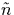
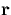
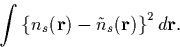

The approximate charge density is expanded in a set of basis functions [38,39],
| (19) |
We can now write an approximation to the Hartree energy in Equation 2.4.15. This is always lower than EH, but tends to EH as tends to and so provides a way of estimating the quality of the basis function fit,
| (20) |
Then we can select ck in Eq. 3.2.7 to minimise the error
| (21) |
If this is now differentiated with respect to ck in order to determine the minimum we get an important expression,
Evaluation of these `t matrices' is often the slowest step in these cluster calculations, so obviously a careful choice of fitting function, gk, is required. Simple Gaussian functions have the advantage of being analytically soluble, but if there are roughly as many gk as basis functions (commonly the case), this means the t matrices are still O(N3) integrals. Nonetheless, this is the way all the O in Si work was performed. However it is possible to split the gk into two types of function,
The first of these gives a Gaussian potential,
| (22) |
making tijk a simple product of three Gaussians which is quick to calculate. However the form of these expressions means that their integral vanishes, and hence they do not contribute to the total charge density. Therefore the second set of expressions for gk are introduced (simple Gaussians) to ensure the integrated charge density gives the correct number of electrons.
This formalism was adopted for the III-V work in Chapter 4, however when testing different fitting functions for small Si-O based molecules such as disiloxane, (SiH3)2O, we found that a much better fit was obtained using simple Gaussian functions. Therefore these have been used for all the Si work despite the loss in computing speed.
The exchange-correlation is similarly approximated as
| (23) |
However the expression used to minimise the error in  for EH (Equation 3.2.9) was integrated over all and does not necessarily minimise the error at any specific value of . Therefore it is necessary to choose a new approximation for and a good choice is a sum of Gaussians,
| (24) |
with dk,s obtained by minimising
|  | (25) |
If this is differentiated with respect to dk,s we obtain
The integrals are the same for both s, and if gk is set to the first form in Equation 3.2.13 then uijk are just proportional to tijk which makes calculation extremely quick.